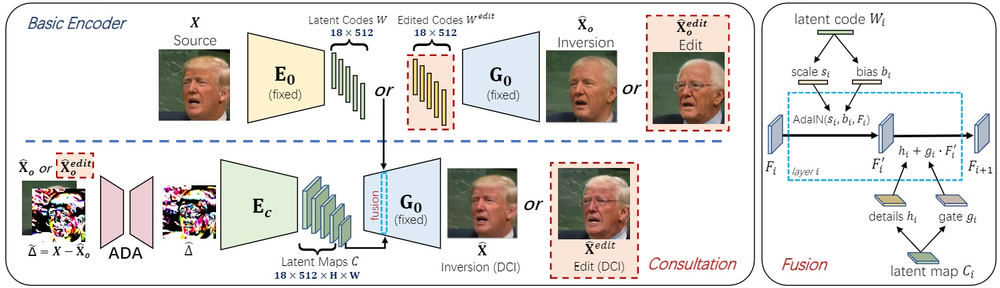

HRDFuse: Monocular 360° Depth Estimation by Collaboratively Learning Holistic-with-Regional Depth Distributions
-
Hao Ai
HKUST(GZ)
-
Zidong Cao
HKUST(GZ)
-
Yanpei Cao
ARC Lab, Tencent PCG
-
Ying Shan
ARC Lab, Tencent PCG
-
Addison Lin Wang
AI Trust, HKUST(GZ) & Dept. of CSE, HKUST
Abstract
Depth estimation from a monocular 360° image is a burgeoning problem owing to its holistic sensing of a scene. Recently, some methods, \eg, OmniFusion, have applied the tangent projection (TP) to represent a 360° image and predicted depth values via patch-wise regressions, which are merged to get a depth map with equirectangular projection (ERP) format. However, these methods suffer from 1) non-trivial process of merging plenty of patches; 2) capturing less holistic-with-regional contextual information by directly regressing the depth value of each pixel. In this paper, we propose a novel framework, HRDFuse, that subtly combines the potential of convolutional neural networks (CNNs) and transformers by collaboratively learning the holistic contextual information from the ERP and the regional structural information from the TP. Firstly, we propose a spatial feature alignment (SFA) module that learns feature similarities between the TP and ERP to aggregate the TP features into a complete ERP feature map in a pixel-wise manner. Secondly, we propose a collaborative depth distribution classification (CDDC) module that learns the holistic-with-regional histograms capturing the ERP and TP depth distributions. As such, the final depth values can be predicted as a linear combination of histogram bin centers. Lastly, we adaptively combine the depth predictions from ERP and TP to obtain the final depth map. Extensive experiments show that our method predicts more smooth and accurate depth results while achieving favorably better results than the SOTA methods.
Results on the benchmarkdataset: Stanford2D3D, Matterport3D and 3D60

Approach
Overview of our high-fidelity image inversion and editing framework. The basic encoder E0 infers a low-rate latent code W corresponding to a low-fidelity reconstruction image hat{X}o. The distortion map contains the lost high-frequency image-specific details to improve the reconstruction fidelity. The red dotted boxes indicate the editing behaviour with certain semantic direction. To achieve high-fidelity image editing, we propose the distortion consultation branch to facilitate the generation. In the distortion consultation, Δ is first aligned with the low-fidelity edited image by ADA and then embedded to a high-rate latent map C via the consultation encoder Ec. Latent code W and latent map C are combined via the consultation fusion (see details in the right part) across layers of G0 to generate the final edited image.

More Results
BibTeX
@inproceedings{wang2021HFGI,
title={High-Fidelity GAN Inversion for Image Attribute Editing},
author={Wang, Tengfei and Zhang, Yong and Fan, Yanbo and Wang, Jue and Chen, Qifeng},
booktitle = {Proceedings of the IEEE/CVF Conference on Computer Vision and Pattern Recognition (CVPR)},
year={2022}
}